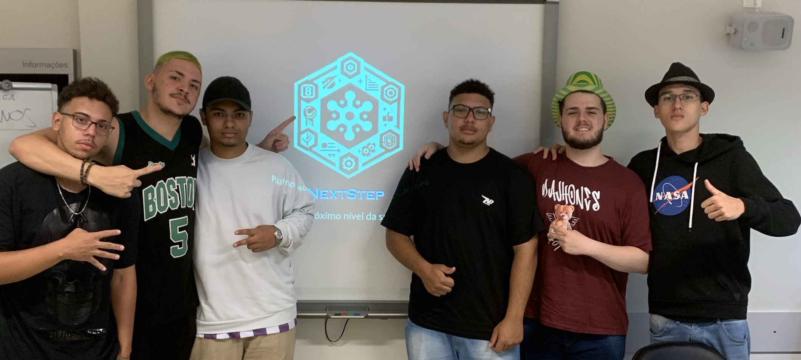
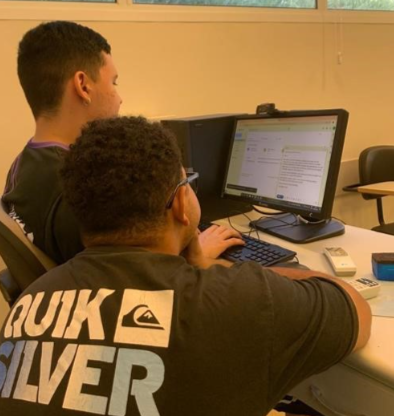
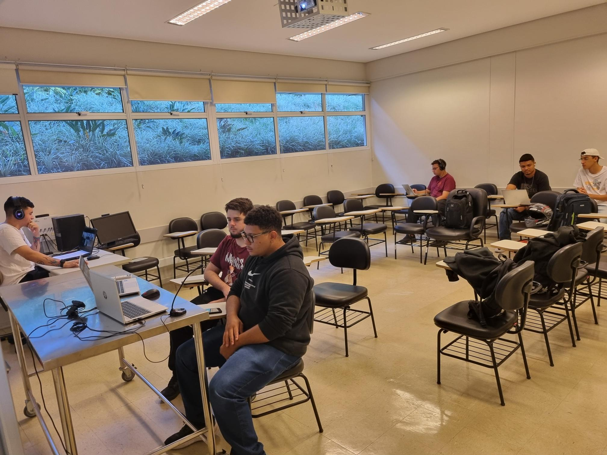

20 de Março de 2024
Inicio do Projeto

Reunião inicial para discutir o objetivo e a estrutura do projeto. A ideia principal era ajudar pessoas a ingressarem no mercado de trabalho por meio de currículos e simulações de entrevistas, buscando combater o desemprego, uma das causas da pobreza.
27 de Março de 2024
Apresentação da Ideia ao Orientador
Remodelagem do plano do projeto e divisão de tarefas. A proposta de fazer documentários e entrevistas com empresas foi discutida com o orientador, e a ideia inicial foi ajustada para incluir vídeos informativos.
3 de Abril de 2024
Pesquisa dos Temas
Divisão das responsabilidades entre os integrantes para pesquisa de temas essenciais, como desemprego, qualificação profissional e desigualdade. Primeiros contatos com organizações e definição das perguntas para entrevistas.
17 de Abril de 2024
Preparação para a Primeira Entrevista

Preparação do roteiro para a primeira entrevista com o RH da escola Senac, marcando um primeiro contato importante para validação do projeto.
15 de Maio de 2024
Contato com Empresas e Oficina de Currículos
Discussão com o professor Thierry sobre o conceito de trabalho e realização de uma oficina de currículos para aprimorar o conteúdo a ser desenvolvido para o público.
12 de Junho de 2024
Conversa com Luciana Ferreira, CEO da Fator RH

Entrevista com uma especialista de RH, que ajudou a esclarecer dúvidas sobre o mercado de trabalho, trazendo informações valiosas para o projeto.
03 de Julho de 2024
Edição do Primeiro Vídeo
Conclusão da edição de um vídeo informativo e início da discussão sobre estratégias de divulgação para alcançar o público-alvo.
17 de Julho de 2024
Sessão de Feedback Interno
Avaliação do progresso do projeto com base no feedback recebido das primeiras entrevistas e vídeos. Definição de estratégias para melhorar o conteúdo e a divulgação.
28 de Agosto de 2024
Campanha de Divulgação
Início de uma campanha de divulgação nas redes sociais para aumentar a visibilidade dos vídeos e alcançar pessoas em busca de emprego.
11 de Setembro de 2024
Planejamento para a Feira de Ciências
Definição dos tópicos e planejamento do conteúdo que será apresentado na feira de ciências, com o objetivo de engajar mais pessoas e divulgar o projeto.
16 de Outubro de 2024
Finalização da Apresentação
Finalização da apresentação em PowerPoint para a exposição do projeto na feira de ciências, consolidando o trabalho realizado durante o ano.